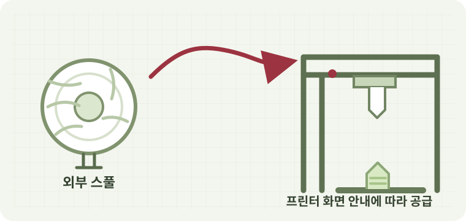
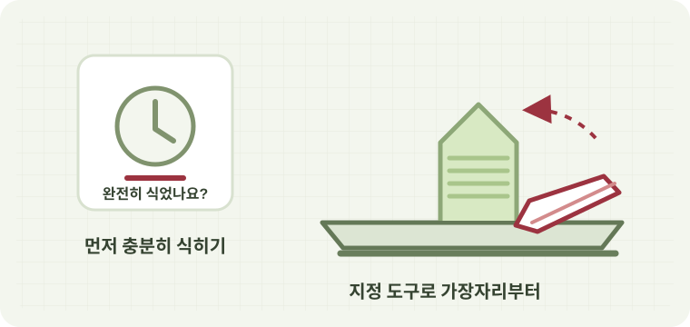

220 × 220 × 250:가로(X) × 세로(Y) × 높이(Z) · 단위 mm
오프라인 기종 사양 안내 안전한 3D 프린터 사용을 위한 안내
만들기에 집중하세요.
관리는 함께할게요.
처음이어도 괜찮아요. 아래에서 프린터를 고르고, 필요한 안내를 찾아보세요.
사용할 프린터 선택
가이드 준비됨
모델명을 확인한 뒤 안내를 시작하세요.
빠른 메뉴
무엇을 도와드릴까요?
사용 안내 / Creality K2 Plus
처음 사용하기
출력 전 확인부터 마무리까지, 한 단계씩 진행해 보세요.
모델 안내 Creality Print 7.3.0 한국어 화면 기준이에요. 네 기종 모두 외부 스풀을 사용하며, 프린터에서 보이는 모델과 같은 프로파일을 선택하세요. 메뉴가 다르면 담당자에게 확인해 주세요.
현재 선택 기종
Creality K1C최대 출력 크기
안전 약속 프린터가 작동 중일 때 노즐과 베드는 매우 뜨거울 수 있어요. 출력 중인 부품이나 내부를 손으로 만지지 마세요.
문제 해결 / Creality K2 Plus
어떤 문제가 생겼나요?
증상에 맞는 항목을 고르면, 먼저 해볼 수 있는 점검을 안내해요.
모델 안내 아래 내용은 네 기종에 공통인 안전 점검입니다. 화면 메뉴나 부품 조작 방법은 모델과 학교 설정에 따라 다를 수 있어요.

01 / 재료 관리
필라멘트 교체 방법
외부 스풀과 화면 안내에 따라 안전하게 교체해요.

02 / 출력 마무리
출력물 분리 방법
충분히 식힌 뒤 허용된 도구로 조심히 분리해요.
증상별 안내
발생한 문제를 선택해 주세요
⌖
증상을 선택해 주세요
왼쪽 목록에서 가장 가까운 증상을 선택하면
점검 순서가 여기에 표시됩니다.
문제 해결 / 재료 관리
필라멘트 교체 방법
Creality K1C의 외부 스풀을 교체하는 안전한 순서예요.
교체 전 확인 출력 중에는 필라멘트를 빼거나 프린터를 분해하지 마세요. 출력이 진행 중이거나 상태가 이상하면 담당 선생님에게 먼저 알려주세요.
외부 스풀 / 화면 안내 우선기종이 맞는지 확인하고
기종이 맞는지 확인하고
천천히 교체해요.
네 기종 모두 외부 스풀을 사용하지만, 화면 메뉴와 필라멘트 경로는 다를 수 있어요. 프린터 화면에 표시된 안내를 우선으로 따라주세요.
출력 상태와 재료 확인
출력이 끝난 상태인지 확인하고, 새 필라멘트가 학교에서 허용한 재료인지 살펴보세요. 다른 재료로 바꾸기 전에는 담당자에게 확인하세요.
화면 안내로 기존 필라멘트 빼기
선택한 Creality K1C의 화면에서 필라멘트 교체 또는 배출 안내를 찾으세요. 화면에서 빼도 된다고 안내한 뒤에만 필라멘트를 분리하세요.
노즐은 뜨거울 수 있어요. 노즐이나 움직이는 부품을 만지지 마세요.
새 외부 스풀 걸기
새 스풀을 지정된 거치대에 놓고, 필라멘트가 엉키지 않고 부드럽게 풀리는지 눈으로 확인하세요. 설치 방향이 헷갈리면 담당자에게 물어보세요.
화면 안내에 따라 새 필라멘트 넣기
프린터 화면의 넣기 안내에 맞춰 필라멘트를 공급 경로에 넣으세요. 화면에서 안내하기 전에는 밀거나 당기지 말고, 완료 표시가 나오는지 확인하세요.
오류가 있으면 멈추고 알리기
재료가 들어가지 않거나 오류가 나타나면 반복해서 시도하거나 덮개를 열지 마세요. 화면의 문구를 기록해 담당 선생님에게 알려주세요.
문제 해결 / 출력 마무리
출력물 분리 방법
출력이 끝난 뒤 베드가 충분히 식었는지 먼저 확인하세요.
열에 주의하세요 출력 직후 노즐과 베드는 뜨거울 수 있어요. 손으로 만져 식었는지 시험하지 말고, 화면과 담당자의 기준에 따라 기다려주세요.
출력 완료 / 충분히 식힌 뒤뜨거울 때는 기다리고,
뜨거울 때는 기다리고,
도구는 조심히 사용해요.
기종에 따라 베드 구조와 분리 방식이 다를 수 있어요. 학교에서 지정한 도구와 프린터별 안내를 따라주세요.
출력이 끝났는지 확인
프린터 화면에서 출력 완료를 확인하세요. 화면에 오류가 있거나 출력이 진행 중이면 결과물을 건드리지 말고 담당 선생님에게 알려주세요.
베드가 완전히 식을 때까지 기다리기
프린터 화면의 온도 표시와 학교 기준에 따라 충분히 기다리세요. 손으로 만져 온도를 확인하지 마세요.
지정된 분리 도구 사용
학교에서 허용한 도구만 사용하고, 도구가 사람 쪽을 향하지 않도록 조심하세요. 출력물의 가장자리부터 천천히 시도하고 강하게 비틀거나 밀지 마세요.
잘 떨어지지 않으면 중단
출력물이 움직이지 않거나 베드 표면이 함께 들리는 것 같으면 더 힘주지 마세요. 금속 도구로 긁거나 베드를 임의로 떼지 말고 담당자에게 요청하세요.
핫베드 플레이트 다시 장착
프린터가 멈추고 베드가 완전히 식은 상태에서 선택한 기종에 맞는 플레이트를 준비하세요. 인쇄면이 위를 향하도록 놓고, 플레이트의 모서리와 베드의 표시·외곽선을 맞춰 평평하게 내려놓으세요.
플레이트 아래에 이물질이 없는지, 네 모서리가 모두 밀착됐는지 확인하세요. 비뚤어지거나 들뜨면 출력하지 말고 다시 맞추세요. 방향이 헷갈리면 담당자에게 확인하세요.
작업 공간 정리
분리한 결과물과 도구를 정해진 곳에 두고, 베드에 남은 재료는 담당자의 안내에 따라 정리하세요.
지원 / 문제 신고
고장 신고
기기 번호와 증상을 남기면 담당자가 확인할 수 있어요.
오프라인 신고는 이 Chrome 프로필에만 저장됩니다. 다른 PC와 공유하거나 관리자 기능을 쓰려면 온라인 버전을 이용해 주세요.
신고 기록
신고 목록 0
신고 내용기기 번호상태등록 일시
아직 신고가 없어요. 문제가 생기면 내용을 남겨주세요.
관리자 기능온라인 전용
오프라인 버전에는 서버 관리자 기능이 없습니다. 신고 수정·삭제·상태 관리는 온라인 페이지에서 이용해 주세요.